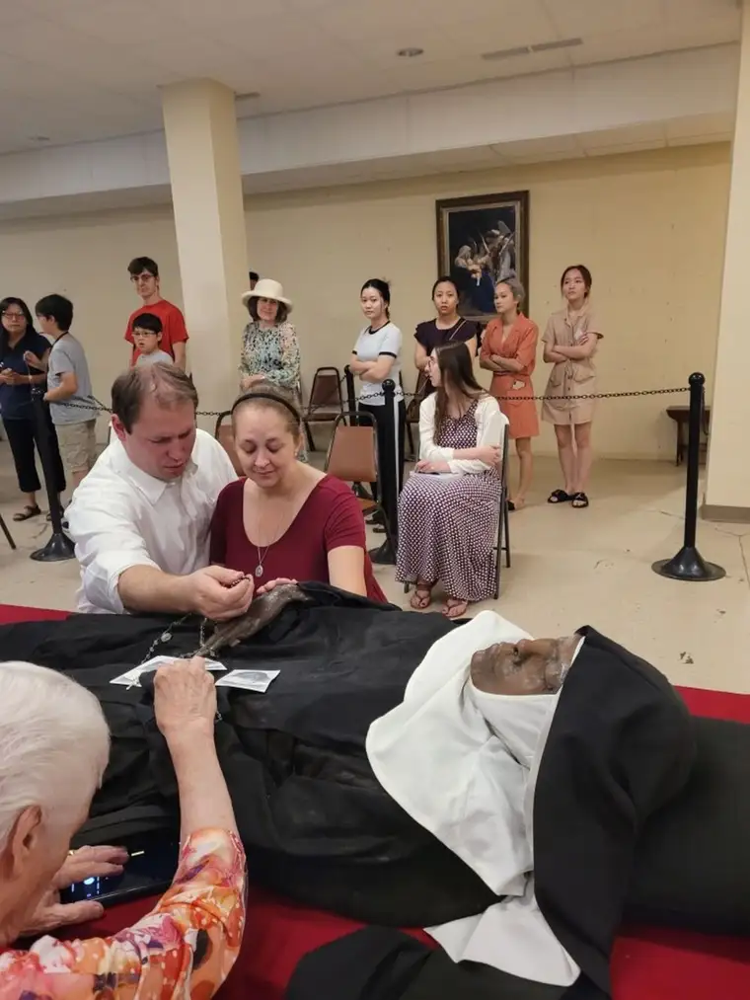
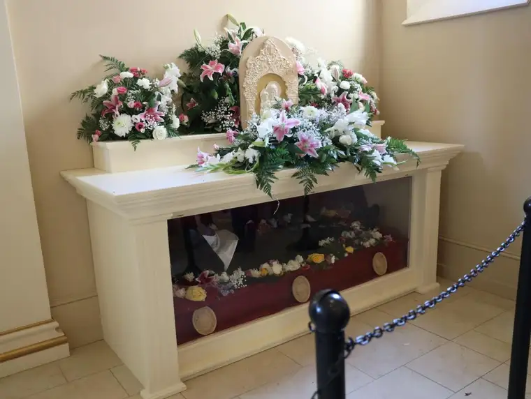

HORACE, N.D. – Visiting her son Preston and his family near Chicago the end of May, Patti Allex looked forward to an art show the group planned to attend before her return train trip to Fargo.
But instead, on May 28—the day of the event—Patti found herself in the midst of a packed, 12-passenger van with the family of 10 and a friend, bound for Gower, Missouri, to see the body of a Benedictine nun who’d died four years earlier.
The evening prior, her daughter-in-law, Kym, caught a social-media post about Sister Wilhelmina Lancaster, whose body, recently exhumed by the order she founded, was discovered intact.
When someone suggested they go view the body, the idea was quickly dismissed as impractical. But Patti’s heart stirred. “I want to go see her!” she’d announced, despite that it would also mean canceling a party they’d planned for that weekend.
“Most people would consider (such a trip) an insane idea, and even more insane with eight kids,” Preston admits. Yet, for years, he’d been telling youngsters, as a religious-formation instructor, about incorruptible saints. “They’re all in Europe, though. I always thought it would be cool if we ever had one in America, to see that tangible evidence of God working in the world.”

‘What do you think, Lord?’
On a whim, at 10:30 p.m., they all jumped into the van and started down the road. But the kids were tired and cranky, so they returned home, resigned. Struggling to sleep, Patti prayed: “Lord, if you want us to do this, open the doors and let it happen. If not, let us be at peace.”
By morning, “everyone was on the same page,” she says, finding the idea of visiting a potential incorrupt saint too intriguing to pass up.
They reloaded the van for what they thought would be a day trip, and eight hours later, pulled onto the grounds of the Abbey of Our Lady of Ephesus, joining hundreds of other curious pilgrims. Her body was set to be encased in glass the next day. For just a short time, public viewing up close would be permitted.

“If she is eventually canonized as a saint, anything that touched her hands or cloak would become a third-class relic,” Preston explains. “We knew that if we were going to make the trip, it would be best to go in the next 24 hours so we could be next to her, and, honestly, find out if it’s real or not.”
A history of ‘Incorruptibles’
Catholics have long paid attention to often canonized saints who, upon being unearthed for various reasons, have been found not to have disintegrated as expected, and believe incorruptibility to signal potential holiness.
“The experience of being close to her body will mean more when the Church approves it,” says Preston, admitting he’s somewhat skeptical, despite his firm faith. “I would always hold back that super joy and enthusiasm until it’s official. But obviously it was profound enough for me to go. My actions speak more than my emotions.”
Father Jayson Miller, a priest for the Fargo Diocese, has been following the story of Sr. Wilhelmina, and believes God is trying to communicate something through “upholding this body—to show us what kind of life leads to eternity.”
All our bodies will ultimately go into the earth and rot away, he continues, “but the Lord will raise them up again, joining our souls, in their glorified states.”
Monsignor Gregory Schlesselmann says that before the Church declares anyone incorrupt, it initiates a scientific investigation to rule out a natural cause.
According to a mortician local to the area , Sr. Wilhelmina wasn’t embalmed, and was placed in a simple wooden casket before burial. Patti says the lining of the casket was disintegrated, while the nun’s habit was not, and no foul smell emanated, despite four years of burial.
“If no natural cause is discovered, the Church might—and I say might—declare her incorrupt by simply allowing it to be known,” Schlesselmann says, explaining that incorruptibility is a simpler, less formal process than that of canonization.
It’s an interesting prospect, he admits. “We’re drawn to evident signs of God’s presence and activity,” clarifying that incorruptibility doesn’t mean fully preserved. “They don’t look fresh as a daisy; there’s a certain measure of drying out, but not decay in the normal, scientific sense.”
Potential holiness should be the focus, he says, adding that while most of the incorruptible saints have been found in Europe, “it’s entirely possible that saints could grow up on American soil and live their entire lives here.”

Who was Sr. Wilhelmina?
Until recently, Schlesselmann hadn’t heard of the nun, nor the order she founded. “But she definitely could have been an amazing saint.”
The fact that she’s African American seems another indicator of God’s grace, he says. “The Church has plenty of non-white saints. The grace of God is not discriminatory…race has nothing to do with holiness,” he adds. “Holiness has to do with living a godly life that allows God’s goodness to work through them.”
The timing also seems fitting, he says, given our society’s current focus on our separateness in the name of racism. “Yet here’s an example of someone who actually brought people together, and the Church is happy to see where that might lead.”
Craig Stich, a Catholic deacon from Battle Lake, Minnesota, wrote on a social media post about the nun that incorruptibility “is a grace from God to help us contemplate (a person’s) hidden life in Christ.”
As this Catholic News Agency article reveals, Sr. Wilhelmina’s life was one of conviction, despite having grown up during challenging times, and whose fidelity to Christ, and special love for his mother, Mary, was profound.
Patti wasn’t expecting to be given such a close view of Sr. Wilhelmina, so when encouraged to get in a line bringing her within inches of her body, she was overwhelmed. “Her whole habit, everything was intact. And her nails—I kept looking at her nails. Her fingernails were just perfect.”
Because air will deteriorate the skin, she explains, a light layer of wax had been applied to her exterior, but by appearance, it seemed Sr. Wilhelmina had died just hours ago. “Her clothes were dirty of course; they’d been in a coffin. But they, too, were perfect, and there was a Rosary in her hands.”
By then, day nine of the exhumation, around 500 people a day had been on the grounds to see her body, and police cars and some media, though not a lot, were present, Preston says. Volunteers supplied the pilgrims with fruit and water, and the Knights of Columbus guarded the body as intrigued visitors drew near.
Patti likens the experience to when St. Thomas needed to touch Jesus’ wounds after the Resurrection to believe he was real. “God gives these things to us as a sign of his love for us, to lead us to have more faith and hope, and remind us that heaven is real, and that while life ends, there’s more to it (than earthly life).”
Moved by the experience, including visiting her original gravesite, the family decided to stay for the encasement ceremony the following day, making a Wal-Mart run to buy toothbrushes and delaying Patti’s train trip home.

Miller says, “I think it’s significant that she fought during her life to preserve her habit—her religious garb and her veil—and that those share in the preservation,” adding, “It signals to the world that in religious life, you are not living for this world, but for eternity, and it’s a sign of your consecration to God.”
During her life, he notes, Sr. Wilhelmina was “under attack from various forces that tried to undermine that sign of consecration, trying to equalize religious life with any other common life,” despite it being extraordinary. “I think the fact that she had a deep love for the traditional Mass, the breviary, and the way of Benedictine life, is very significant for our times; a sign of hope and a reminder that the true, good and beautiful bring us to God.”
As we’ve “strenuously tried to remove any reference or hint of God’s presence in our world,” Schlesselmann adds, we’re left increasingly empty. “We are not whole unless we allow God to be with us. Something is fundamentally missing, and we’re going to long for it” until it is fulfilled by God.
The irony here, he says, is that Sr. Wilhelmina’s body should have dried out and decomposed, yet, “it would appear God is keeping it fresh to a certain extent, which is miraculous. That’s spiritually what God does for our hearts. Otherwise, without him and his life in us, we, too, will just dry up and decompose.”
[For the sake of having a repository for my newspaper columns and articles, I reprint them here, with permission, a week after their run date. The preceding ran in The Forum newspaper on June 10, 2023.]